① 照節次讀：每一節先讀說明、動手玩互動元件，預測結果再按按鈕驗證。 ② 對照講義：頁上 §徽章對應 cppds 章節；細節與完整程式請回講義 07 與 cppds 原文。 ③ 每節做 quiz：答錯就回到該節重讀，不要往下跳。 ④ 最後翻 關鍵詞彙卡（35 張）自測術語（中文為主、術語附英文），並用 REF 總覽區當速查表，章末的重點回顧可以用來複習。標「課程補充」的節與標「（補充）」的收合區是課堂沒細講的延伸，第一輪可略過。
本章探討兩件事：搜尋（searching） 從一堆資料中找出特定元素，排序（sorting） 把資料重新排列成有序狀態。我們會從最樸素的「逐一比對」開始，逐步揭開背後的演算法，並且用「比較次數」當作分析的單位。
搜尋（searching）是在一群資料中找出特定元素的過程。最常見的問法是「這個值在不在裡面」，答案是 true 或 false。
C++ 做一般的線性成員檢查，可以用 <algorithm> 的 std::find(first, last, item)：它從 first 一路往後比到 last 之前，找到就回傳指向那個元素的迭代器，找不到就回傳 last。所以對 vector<int> aList，判斷式寫成 find(aList.begin(), aList.end(), item) != aList.end()。
false true
15 不在 {3, 5, 2, 4, 1} 裡，find 回傳 v.end()，比較結果是 false；3 在裡面，結果是 true。這一行寫起來很短，背後仍然要一個一個比對；搜尋還有其他做法，接下來幾節逐一介紹。
每一節都採用相同的版面：左邊是「視覺化畫布」與「控制列」，右邊是「即時統計」、「對應虛擬碼（pseudo-code）」與「複雜度分析」。請大膽地按 ▶ 開始 看完整動畫，或按 → 單步 一格一格觀察。
把資料想像成一排櫃子，要找某個物件，最直覺的辦法就是從第 0 格開始、一格一格打開來看。這就是 sequential search，也叫 linear search。它不要求資料有序，是處理一般 list 時最基本的搜尋方法。
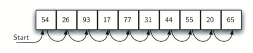
vector 裡的元素有線性（循序）的關係，每個元素都可以用索引存取。索引本身有順序，所以可以從索引 0 開始依序拜訪每一格，這就是循序搜尋（sequential search）。下面的函式需要兩個參數：要搜尋的 vector 與要找的值，回傳值是 bool。
true false
找 44 時比到索引 6 就回傳 true；找 50 時要比完全部 10 個元素才能確定不在，回傳 false。這個版本以值傳遞 vector<int> aList，每次呼叫都會複製整個 vector；課程標頭 searching.hpp 的版本改用 const vector<int>&，不複製，也保證不修改資料。
分析搜尋演算法時，以「比較」作為基本的計算單位，並假設要找的值出現在每個位置的機率都相同。值不在 list 裡時，唯一的確認方法是跟每個元素都比一次，$n$ 個元素就要比 $n$ 次。值在 list 裡時，最好的情況是第一個就找到（1 次），最差是比到最後一個（$n$ 次），平均約 $\frac{n}{2}$ 次。所以循序搜尋是 $O(n)$。
如果 list 已經排序好了，就有捷徑：當看到的元素已經比目標大（升冪情況下），後面就不可能有了，可以立刻回傳 false。雖然找到的時候沒省到比較次數，但找不到時平均能少做一半：預期比較次數降到 $n/2$（仍是 $O(n)$，但常數變小）。
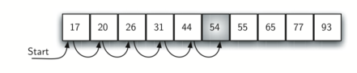
true false
44 在索引 4 找到；找 50 時比到 54 就停下，只比了 6 次，不必走完 10 個元素。
兩個版本的比較次數如下。值在 list 裡時，有序與否沒有差別；值不在時，有序版平均只要比一半就能停下。
| 情況 | 最佳 | 最差 | 平均 |
|---|---|---|---|
| 值在 list 裡（兩種版本） | 1 | $n$ | $\frac{n}{2}$ |
| 值不在（未排序） | $n$ | $n$ | $n$ |
| 值不在（已排序） | 1 | $n$ | $\frac{n}{2}$ |
| 情境 | 最佳 | 最差 | 平均 |
|---|---|---|---|
| item 在 list 中（兩種版本） | $1$ | $n$ | $n/2$ |
| item 不在（普通版） | $n$ | $n$ | $n$ |
| item 不在（有序版） | $1$ | $n$ | $n/2$ |
當 list 已排序，可以用更聰明的策略：直接看正中間那一個。比目標大就往左半找；比目標小就往右半找；剛好相等就找到了。每次比較排除掉一半，所以總比較次數最多 $\lceil \log_2 n \rceil + 1$。
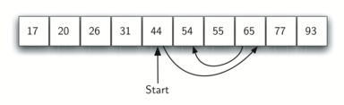
如果中間的值不是要找的值，就利用「有序」這個性質排除一半：要找的值比中間大，左半邊連同中間那個都不可能是答案，只要在右半邊繼續找；比中間小就換成左半邊。在剩下的一半重複同樣的動作。
本章的搜尋函式都放在課程標頭 pythonds3/cppds/searching.hpp，程式 #include 之後就能直接呼叫。標頭版的 binarySearch 在每次比較前印出 midpoint - first，也就是中點離目前範圍左端有幾格，方便觀察範圍怎麼縮小。
4 true 4 2 0 false
找 44：範圍是索引 0 到 9，中點 4 離左端 4 格，第一次就找到。找 50：先比索引 4 的 44，50 比較大，範圍縮成 5 到 9，中點 7 離左端 2 格；65 比 50 大，範圍縮成 5 到 6，中點 5 離左端 0 格；54 也比 50 大，範圍變空，回傳 false。
二分搜尋是分而治之（divide and conquer）策略的例子：把問題切成較小的部分，用某種方式解決較小的部分，再組合出整個問題的答案。
改寫成遞迴時，每次遞迴呼叫處理的是同一個 vector 上較小的索引範圍。傳入 first 與 last 就能改變搜尋區間，不必複製出子 vector。binarySearchRec 只是包裝，從整個範圍開始呼叫 binarySearchRecRange。
44 true 44 65 54 false
標頭的遞迴版印出每次比較的值：找 44 時只比了 44；找 50 時依序比 44、65、54，範圍變空就回傳 false。和迴圈版比較的是同樣幾個位置。
下面的動畫用迴圈版逐步執行，可以改陣列與目標值，看 first、last、midpoint 怎麼移動。
從 $n$ 個元素開始，第一次比較後大約剩 $\frac{n}{2}$ 個，第二次後剩 $\frac{n}{4}$，接著 $\frac{n}{8}$……
| 比較次數 | 大約剩下的元素數 |
|---|---|
| 1 | $\frac{n}{2}$ |
| 2 | $\frac{n}{4}$ |
| 3 | $\frac{n}{8}$ |
| … | … |
| $i$ | $\frac{n}{2^i}$ |
一直切到只剩一個元素時，它要嘛是要找的值，要嘛不是。這時的比較次數 $i$ 滿足 $\frac{n}{2^i} = 1$，解得 $i = \log n$。最多比較次數和元素個數成對數關係，所以二分搜尋是 $O(\log n)$。
const vector<int>& 與 first、last 邊界後，才保留 $O(\log n)$ 比較與 $O(\log n)$ call stack。
用遞迴實作二分搜尋，而且不複製子 vector：除了 vector 本身，還要把目前範圍的起點與終點索引一起傳下去。把下面的空格補好，讓程式能編譯，找得到 44、找不到 50。
base case 是範圍變空（first > last）。中點用 first + (last - first) / 2，兩次遞迴呼叫都傳同一個 a，只改範圍的一端。解答的 main 多查一次 50，確認找不到時會回傳 false。
true false
有沒有可能讓搜尋變成 $O(1)$？只要我們事先決定每個值該存哪裡就行。hash function $h(\text{item})$ 把每個值對應到一個槽（slot）的索引。最簡單的 hash 函數是 remainder method：$h(\text{item}) = \text{item} \bmod m$，其中 $m$ 是表的大小。
雜湊表（hash table）把元素存放在容易再找回來的位置。表中的每個位置稱為 slot，從 0 開始編號。一開始表是空的，可以用一個 vector<int> 實作，所有 slot 先放保留值 -1，表示空槽；表的大小記為 $m$。
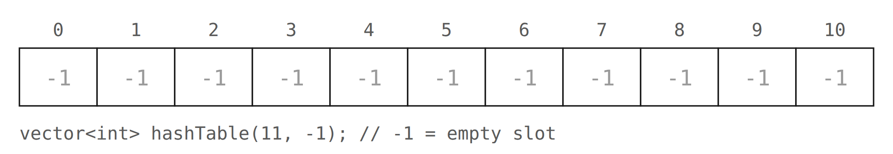
把元素對應到 slot 的規則稱為雜湊函數（hash function）：它接受任何一個元素，回傳 0 到 $m - 1$ 之間的整數。
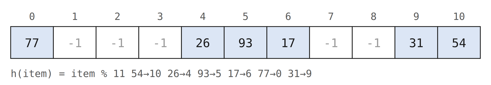
佔用的比例稱為負載因子（load factor）$\lambda = \frac{\text{元素個數}}{\text{表的大小}}$。要搜尋某個值時，只要用雜湊函數算出 slot，再看那一格是不是它，搜尋只要 $O(1)$。
這個方法只有在每個元素都對應到不同 slot 時才行得通。如果下一個要放的是 44，$44 \bmod 11 = 0$，和 77 落在同一格。兩個以上的元素被雜湊到同一個 slot，稱為碰撞（collision，也叫 clash），雜湊必須有辦法處理它。
能把每個元素都對應到不同 slot 的雜湊函數稱為完美雜湊函數（perfect hash function）。給定任意一組資料，並沒有系統化的方法造出完美雜湊函數；好在雜湊函數不必完美也能提升效率。目標是：碰撞少、容易計算、讓元素平均分布在表中。不論用哪種方法，最後通常都要取一次餘數，才能把結果限制在 slot 的編號範圍內。
436-555-4601 切成 43, 65, 55, 46, 01，加總得 $210$；除以 11 得 $h = 210 \bmod 11 = 1$。34 + 56 + 55 + 64 + 10 = 219 → 219 mod 11 = 10。
93 → $93 \bmod 11 = 5$。54→3, 26→1, 93→9, 17→6, 77→4, 31→8
ⓘ 對 17, 31 這類平方後位數不夠的情況，先補 0 至偶數位再取「正中間兩位」做 mod 11 是統一的做法。例如 $17^2 = 289$ → 補成 0289 → 取 28 → $28 \bmod 11 = 6$；$31^2 = 961$ → 補成 0961 → 取 96 → $96 \bmod 11 = 8$。
hashStr。 Item Remainder Mid-Square
54 10 3
26 4 1
93 5 9
17 6 6平方取中：54² = 2916，取中間兩位 91，91 % 11 = 3；17² = 289 只有三位，先補成 0289 再取中間的 28，28 % 11 = 6。同一批數用兩種函數，落點不同。
字串也能雜湊。把 "cat" 看成三個字元的序數值（ASCII 碼），加起來再用餘數法：
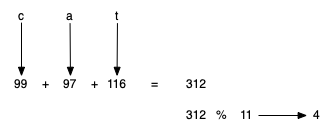
4
int(c) 取得字元的序數值：99 + 97 + 116 = 312，312 % 11 = 4。
這個函數有個缺點：字母相同、順序不同的字（anagram），例如 "cat"、"act"、"tac"，雜湊值一定相同。改善方法是用字元的位置當權重：
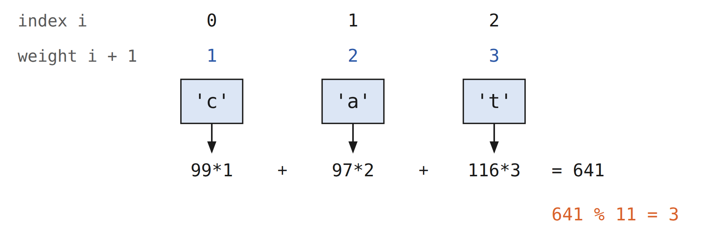
cat: 4 3 act: 4 5 tac: 4 2
三個字的一般版都是 4；加權版分別是 3、5、2，不再撞在同一格。
雜湊函數本身必須有效率，不能讓計算雜湊值變成儲存與搜尋中最花時間的部分；否則還不如直接用前面的搜尋方法。
回到碰撞的問題。兩個元素雜湊到同一個 slot 時，需要有系統的方法把第二個元素放進表裡，這個過程稱為碰撞解決（collision resolution）。簡單的做法是從原本的雜湊位置開始，一格一格往後找，直到碰到第一個空的 slot；走到表尾就繞回開頭，才能涵蓋整張表。
這種「找下一個空位」的方法稱為開放定址（open addressing）；一次看一格的版本稱為線性探查（linear probing）。把 54, 26, 93, 17, 77, 31, 44, 55, 20 依序放進表裡：前六個直接落在自己的雜湊位置，接著 44 想進 slot 0 卻撞到 77，往後找到 slot 1；55 與 20 也一樣往後找：
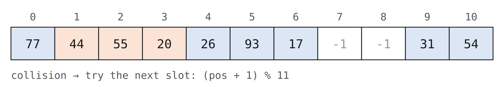
用開放定址與線性探查建好的表，搜尋時也必須用同樣的方法。找 20 時，雜湊值是 9，但 slot 9 放的是 31。不能直接回傳 false，因為 20 可能是碰撞後被推到別處；只能從 slot 10 開始循序往後找，直到找到 20 或碰到空槽。
線性探查的缺點是群聚（clustering）：同一個雜湊值碰撞很多次時，附近的 slot 會被一個個填滿，之後插入的元素也受影響。上面放 20 時，就得跳過一整段雜湊到 0 的元素才找到空位：
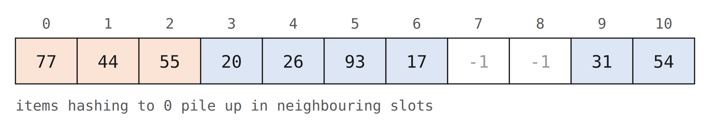
處理群聚的一個方法是跳格：碰撞後不找下一格，而是每次跳過幾格，讓碰撞的元素分散開來。例如「加 3」探查，碰撞後每隔 3 格檢查一次，直到找到空位。
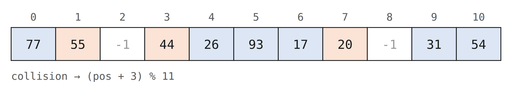
碰撞後另找一個 slot 的過程統稱為重新雜湊（rehashing）。線性探查的重新雜湊函數是 $\text{rehash}(pos) = (pos + skip) \bmod size$。跳的格數必須讓表中每個 slot 最後都會被拜訪到，否則有一部分的表用不到；所以表的大小通常建議用質數。
0:77 1:44 2:55 3:20 4:26 5:93 6:17 7:-1 8:-1 9:31 10:54
結果和上面的圖一致：44、55、20 因為碰撞落在 1、2、3，slot 7、8 仍是空的。
平方探查（quadratic probing）是線性探查的變形：重新雜湊時不加固定的格數，而是依序加 1、4、9……。第一個雜湊值是 $h$ 時，接著試的位置是 $h+1$、$h+4$、$h+9$ 等，跳的距離是連續的完全平方數。
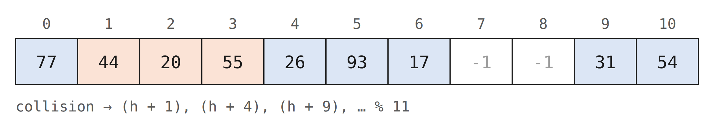
另一種處理碰撞的方法是鏈結法（chaining）：每個 slot 存一個集合（鏈），同一個 slot 可以放很多個元素。碰撞時，元素一樣放在自己的雜湊位置；只是同一個位置的元素越多，在那個集合裡找東西就越費時。
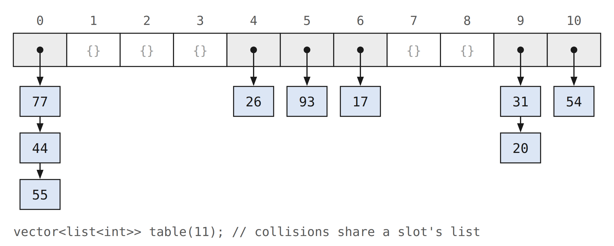
搜尋時先用雜湊函數算出元素應該在的 slot，再用搜尋方法檢查那個 slot 的集合裡有沒有它。
實作以平方探查當作重新雜湊方法的 quadraticProbing：探查序列是 $h, h+1, h+4, h+9, \dots$。把迴圈裡的空格補好，讓九個鍵都落在大小 11 的表中不同的 slot。
第 probe 次重新雜湊要試 h + probe * probe，再對表的大小取餘數。++probe 寫在計算之前，所以第一次試的是 h + 1。
105 100 -1 113 114 99 116 117 -1 97 108
第一個值 105 出現在 slot 0：105 的雜湊值是 6，依序試 7、10、4 都有資料，最後落在 (6 + 16) % 11 = 0。99 的雜湊值 0 已被 105 占用，依序試 1、4、9，落在 (0 + 16) % 11 = 5。和線性探查的測驗題比較，同一組鍵的落點不同。
std::unordered_map 是標準函式庫的具體 hash-table 容器。本頁的固定容量 HashTable 只實作 put/get 與顯示輔助，下面同時列出完整 ADT 常見操作作為對照：
| 操作 | 語意 |
|---|---|
| HashTable(size) | 建立固定容量的教學用 hash table |
| put(key, val) | 新增 key–value 對；若 key 已存在則覆寫舊值 |
| get(key) | 教學版傳回對應 value；找不到回空字串，因此無法區分「不存在」與「值本來就是空字串」 |
| erase(key) | 刪除指定的 key–value 對 |
| size() | 回傳目前儲存的 key–value 對總數 |
| contains(key) | 判斷 key 是否在表中，回傳 true/false |
slots、data) 分別存 key 和 value，索引位置必須對齊。get 時要走和 put 一樣的 rehash 路徑，且要偵測「繞回起點」(position == startSlot) 以結束搜尋（代表整個探查鏈都沒有該 key）。
Map ADT 是由 key 與 data 的對應組成的無序集合。HashTable 用兩個平行的 vector 實作：slots 存整數 key，data 在相同的索引存對應的字串。-1 代表空槽，所以這個教學版保留 -1，不接受它當作 key。
hashFunction 是簡單的餘數法，碰撞時用「加 1」的線性探查。put 假設最後一定會找到空位；如果某個非空 slot 裡已經是同一個 key，就用新的值取代舊的值。
get 先算出起始的雜湊值，不在那一格就用 rehash 找下一個可能的位置。迴圈裡檢查 position == startSlot，確保繞回起點時就停止：所有可能的 slot 都看過了，這個 key 一定不在表中。
完整的教學類別放在 pythonds3/cppds/hashtable.hpp。標頭版的 put 最多探查一整圈，表滿時丟出 std::overflow_error；get 一樣探查一圈就停。下面依序放入九組 key 與 value：
77 44 55 20 26 93 17 -1 -1 31 54 bird goat pig chicken dog lion tiger - - cow cat
slots 的排列和前面線性探查的結果相同：類別只是把「key 的探查」和「value 跟著放進同一格」包在一起。
接著讀取並修改表中的資料，注意 key 20 的 value 被取代：
chicken tiger duck bird goat pig duck dog lion tiger - - cow cat []
get(20) 沿著探查鏈在 slot 3 找到 chicken；put(20, "duck") 找到同一個 key，只改 data，slots 不變。get(99) 找不到，回傳空字串，所以印出 []。
54, 26, 93, 17, 77, 31, 44, 55, 20 全部插入：你會發現 44、55、20 都會發生碰撞，被推到別的槽去。再切換到「鏈結法」清空、重做一次，會看到撞到的 item 直接掛在槽下面，不會佔走別人的位置。
Bubble sort 的想法很單純：每一輪從頭走到尾，遇到「左邊比右邊大」就交換。經過一輪之後，最大的元素一定會被送到最右邊，就像氣泡浮到水面一樣。下一輪只要處理剩下的部分，依此類推。
排序（sorting）是把集合中的元素排成某種順序，例如把單字依字母或長度排列。前面的二分搜尋就得益於排好的資料。排序大量資料很耗計算資源，效率同樣和資料量有關：資料少時，複雜的方法可能得不償失；資料多時，就值得用上各種改進。
分析排序時看兩種操作。第一是比較：判斷兩個值哪個比較小，總比較次數是最常用的衡量方式。第二是交換：兩個值的順序不對時要交換位置，交換的成本高，總交換次數也會影響效率。
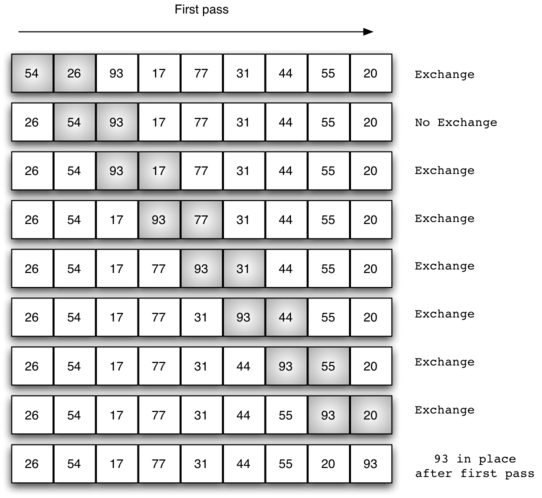
list 有 $n$ 個元素時，第一輪要比較 $n-1$ 對。第二輪開始時最大值已經就位，剩下 $n-1$ 個元素、$n-2$ 對要比。每一輪讓下一個最大值就位，所以總共要 $n-1$ 輪。
C++ 可以用一個暫存變數明確地交換兩個值：
沒有暫存變數，第一個指定就會蓋掉其中一個值。標準函式庫的 swap() 做同樣的事：swap(aList[j], aList[j + 1]);。
本章所有排序函式都在課程標頭 pythonds3/cppds/sorting.hpp，printl 用來印出整個 vector。標頭版的 bubbleSort 在每一輪開始前印一行。
4 14 5 21 29 12 16 4 5 14 21 12 16 29 4 5 14 12 16 21 29 4 5 12 14 16 21 29 4 5 12 14 16 21 29 4 5 12 14 16 21 29 4 5 12 14 16 21 29
7 個元素共 6 輪。第一輪把 29 送到最右邊，第二輪把 21 放到倒數第二格。第三輪結束時已經排好，但這個版本不會提早停，後面幾輪照樣比較。
想看其他排序法的動畫，也可以到 VisuAlgo 的排序動畫。
不論一開始怎麼排列，$n$ 個元素都要跑 $n-1$ 輪：
| 輪次 | 比較次數 |
|---|---|
| 1 | $n-1$ |
| 2 | $n-2$ |
| 3 | $n-3$ |
| … | … |
| $n-1$ | 1 |
總比較次數是前 $n-1$ 個整數的和 $\frac{1}{2}n^{2} - \frac{1}{2}n$，也就是 $O(n^2)$。氣泡排序常被認為是最沒效率的排序法，因為它在知道元素最終位置之前就不斷交換，這些「白做」的交換成本很高。
不過它每一輪都走過整個未排序的部分，所以能做到大多數排序法做不到的事：某一輪完全沒有交換，就表示 list 已經排好，可以提早結束。這個版本常稱為 short bubble。
20 30 40 50 60 70 80 90 100 110
這個 list 只有 90 不在正確位置。第一輪把 90 換到 100 前面，第二輪沒有任何交換，迴圈就 break，不必跑完 9 輪。
Selection sort 跟氣泡排序的比較次數一樣多，但聰明在「每一輪只交換一次」：先掃一遍找出未排序區裡最大的元素，再把它和未排序區的最後一格直接交換，就完成一輪。氣泡排序每比一次就可能交換，selection sort 把交換成本壓到最低。（與 cppds 與 HW4 一致：找最大值放到未排序區尾端。）
和氣泡排序一樣，第一輪之後最大值就位，第二輪之後第二大的值就位；$n$ 個元素需要 $n-1$ 輪，因為前 $n-1$ 輪結束後，最後一個元素一定也在正確位置。
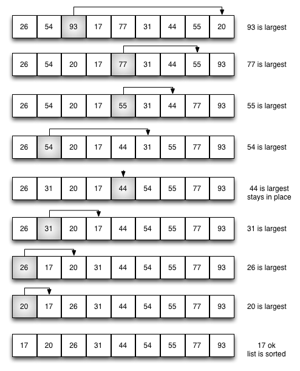
11 7 12 14 19 1 6 18 8 20 11 7 12 14 19 1 6 18 8 20 11 7 12 14 8 1 6 18 19 20 11 7 12 14 8 1 6 18 19 20 11 7 12 6 8 1 14 18 19 20 11 7 1 6 8 12 14 18 19 20 8 7 1 6 11 12 14 18 19 20 6 7 1 8 11 12 14 18 19 20 6 1 7 8 11 12 14 18 19 20 1 6 7 8 11 12 14 18 19 20
第一輪最大值 20 已經在最後一格，positionOfMax 等於 fillSlot，不必交換，所以前兩行相同。之後每一行的右側都多一個就位的數。
選擇排序的比較次數和氣泡排序相同，也是 $O(n^2)$；但交換次數少得多，所以在實測中通常跑得比較快。
Insertion sort 把陣列分成「已排序」（左半）和「未排序」（右半）兩區。每一輪取出未排序的第一張當 curVal（current value，當前要插入的值），往左在已排序區裡找出該插入的位置：遇到比它大的，就把它右移一格讓出空間。注意：這裡做的是位移（shift）而不是交換，所以可能比氣泡排序快一點。
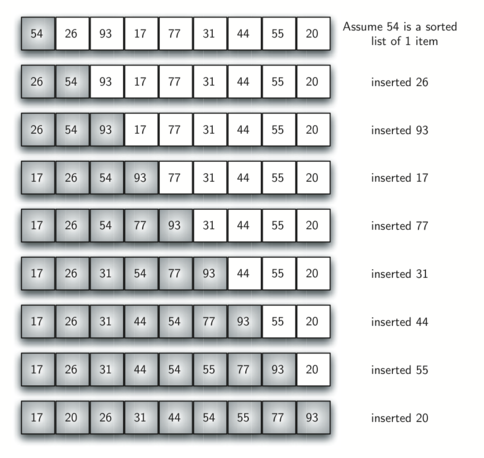
一開始假設只有位置 0 的一個元素是排好的子清單。每一輪處理位置 1 到 $n-1$ 中的一個元素，往回跟子清單比較：比它大的元素往右移一格；碰到比它小的元素或子清單的開頭時，就把它放進空出的位置。
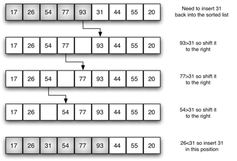
insertionSort() 同樣要跑 $n-1$ 輪。迴圈從位置 1 走到 $n-1$，這些就是要插回子清單的元素。
9 2 5 5 7 9 1 2 9 5 5 7 9 1 2 5 9 5 7 9 1 2 5 5 9 7 9 1 2 5 5 7 9 9 1 2 5 5 7 9 9 1 1 2 5 5 7 9 9
每一行左邊排好的部分多一個元素。兩個 5 與兩個 9 的先後順序沒有改變：比較用的是嚴格的 >，相等的元素不會被移到彼此前面。
一次移動大約只有一次交換三分之一的工作量，因為移動只做一次指定。在實測中，插入排序的表現相當好。
Shell sort 是 1959 年 Donald Shell 提出的方法。觀察到 insertion sort 對「幾乎排序好」的資料很快，但對亂序資料慢。Shell sort 的策略：先用一個較大的 gap 把陣列拆成數個「子陣列」（每個子陣列的元素彼此相距 gap），對每個子陣列各自做插入排序；接著縮小 gap 再做一次；最後 gap = 1（變成普通的 insertion sort），但此時資料已經幾乎排序好。
希爾排序又稱遞減增量排序（diminishing increment sort）。它不是把相鄰的元素分成子清單，而是用一個增量 $i$（稱為 gap），把相隔 $i$ 個位置的元素組成一個子清單。增量為 3 時有三個子清單，各自用插入排序排好：
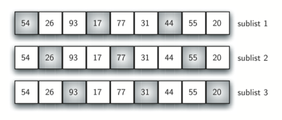
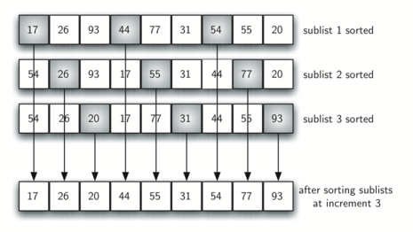
子清單排好後，元素已經移到靠近最終位置的地方。最後用增量 1，也就是一般的插入排序收尾；因為前面已經做過子清單排序，需要的移動次數少很多，這個例子只要再 4 次移動。增量怎麼選，是希爾排序最有特色的地方。
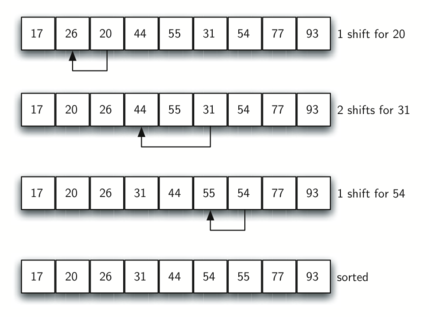
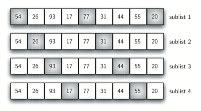
After increments of size 4 the list is 20 26 44 17 54 31 93 55 77 After increments of size 2 the list is 20 17 44 26 54 31 77 55 93 After increments of size 1 the list is 17 20 26 31 44 54 55 77 93 17 20 26 31 44 54 55 77 93
一開始有 $\frac{n}{2}$ 個子清單（9 個數時增量為 4），下一輪 $\frac{n}{4}$ 個（增量 2），最後增量 1，用一般的插入排序排好整個 list。
希爾排序的一般分析超出本課範圍，大致介於 $O(n)$ 與 $O(n^2)$ 之間。改用 $2^k-1$（1、3、7、15、31……）當增量，希爾排序可以達到 $O(n^{\frac{3}{2}})$。
Merge sort 是一個遞迴演算法，分成兩個動作：
(1) Divide 切： 把 list 從中間切成左、右兩半，各自呼叫 merge sort。
(2) Conquer + Merge 合： 兩半都排序好之後，合併成一個有序的大 list：用兩個指標分別走過左、右，每次把較小的那個寫回原本的 vector。
Base case：list 長度 ≤ 1 時自然有序，直接回傳。
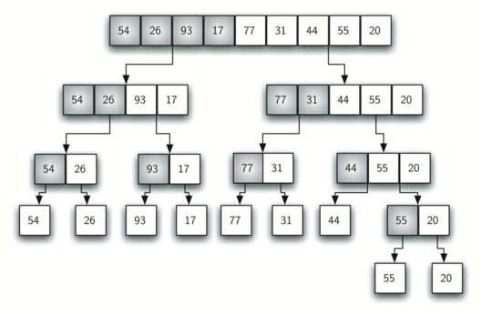
兩半都排好之後，執行最基本的操作合併（merge）：把兩個較小的已排序 list 組合成一個新的已排序 list。
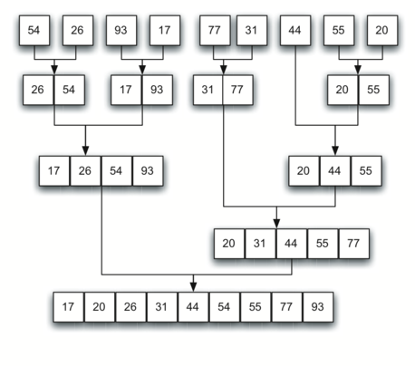
Splitting 54 26 93 17 Splitting 54 26 Splitting 54 Merging 54 Splitting 26 Merging 26 Merging 26 54 Splitting 93 17 Splitting 93 Merging 93 Splitting 17 Merging 17 Merging 17 93 Merging 17 26 54 93
Splitting 一路把 vector 切到只剩一個元素，Merging 再把排好的兩半合併回去。最後一行 Merging 就是排序結果。
對左右兩半呼叫 mergeSort() 之後，就假設它們已經排好；函式剩下的部分負責把兩個較小的已排序 list 合併成一個。合併時反覆挑出兩邊前端較小的那個，一次一個寫回原本的 aList。比較用的是 leftHalf[i] <= rightHalf[j]，相等時先拿左邊的，所以相等元素的相對順序不變，這個實作是穩定的。
mergeSort 有兩個部分。遞迴把 vector 切成兩半，共 $\log n$ 層。合併時每個元素最後都要處理一次、放進排好的 list，所以每一層的合併需要 $n$ 次操作。$\log n$ 層、每層 $n$，總共 $n\log n$ 次操作：合併排序是 $O(n\log n)$ 的演算法。
暫存的左右兩半最多需要 $O(n)$ 的額外元素空間，遞迴堆疊再加上 $O(\log n)$。資料量很大時，這個記憶體成本可能是問題。
Quicksort 也是分而治之，但策略不同：先選一個元素當 pivot（樞紐值），用一個 partition 過程把陣列重新排成「比 pivot 小 ｜ pivot ｜ 比 pivot 大」三段，pivot 就確定到了它的最終位置。接著對左、右兩段各自遞迴呼叫 quicksort。和 merge sort 不一樣，不需要額外陣列，partition 就地完成。
選 pivot 的方法有很多，這裡直接用 list 的第一個元素。pivot 在最終排好的 list 中的位置稱為分割點（split point），之後的遞迴呼叫就以它為界把 list 分成兩段。下例用 54 當第一個 pivot：
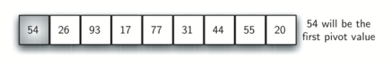
接下來是 partition 過程：找出分割點，同時把其他元素移到正確的一側。先在剩下元素的頭尾放兩個位置標記 leftMark 與 rightMark，目標是把放錯邊的元素換過去，同時逼近分割點。
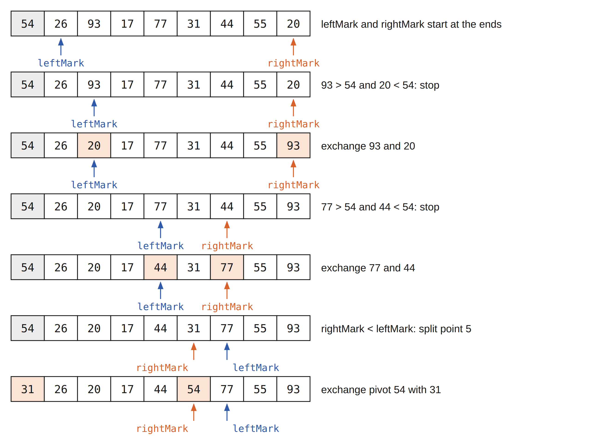
先把 leftMark 往右移，直到找到比 pivot 大的值；再把 rightMark 往左移，直到找到比 pivot 小的值。這兩個值相對於分割點都放錯邊了，交換它們，再重複同樣的步驟。當 rightMark 跑到 leftMark 左邊時停止，rightMark 的位置就是分割點。把 pivot 和分割點的值交換，pivot 就到了最終位置。
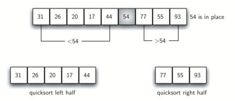
此時分割點左邊都小於 pivot，右邊都大於 pivot。在分割點把 list 分成兩半，對兩半各自遞迴呼叫 quicksort。
std::sort() 的最差比較次數為 $O(n\log n)$，不指定實作策略；常見標準函式庫採 introsort 類混合實作。std::stable_sort() 保證穩定，但實作方式同樣由函式庫決定。
31 26 20 17 44 54 77 55 93 17 26 20 31 44 54 77 55 93 17 26 20 31 44 54 77 55 93 17 20 26 31 44 54 77 55 93 17 20 26 31 44 54 55 77 93 17 20 26 31 44 54 55 77 93
第一行是以 54 分割的結果，和上面的圖相同：54 在索引 5，左邊都比它小，右邊都比它大。之後每一行再多一個 pivot 就位；長度不到 2 的範圍不做 partition，也不印。
找分割點時，$n$ 個元素都要和 pivot 比一次。分割點都落在中間附近時，會切 $\log n$ 層，結果是 $O(n\log n)$；而且不像合併排序需要額外的記憶體。
可惜最差的情況下，分割點可能非常偏左或偏右，切得很不平均：每次都分成 0 個與 $n-1$ 個元素，接著 $n-1$ 個又分成 0 個與 $n-2$ 個……結果是 $O(n^2)$，還要加上遞迴本身的額外成本。
選 pivot 的一種改進方法是 median of three：看 list 的第一個、中間與最後一個元素，取三者的中位數當 pivot。上面的例子中三個值是 54、77、20，中位數是 54。當第一個元素不屬於 list 的中段時，這樣能選到比較接近中間的值，對原本就部分排好的 list 特別有用。
替 quickSort 加一個 bool descending 參數，讓同一套程式既能遞增也能遞減排序。先自己想想：遞迴的骨架要改什麼？partition 裡哪幾個比較要改方向？
遞迴骨架只是把 descending 往下傳，真正要改的是 partition：遞減時，leftMark 找「比 pivot 小」的值，rightMark 找「比 pivot 大」的值，也就是兩個內層 while 的比較方向對調。課程標頭把這一組函式命名為 partitionDesc、quickSortHelperDesc 與 quickSortDesc，才能和遞增版的 quickSort 放在同一個標頭裡。
Ascending: 17 20 26 31 44 54 55 77 93 Descending: 93 77 55 54 44 31 26 20 17
同一套 partition 的想法兩個方向都能排，只是比較的方向反過來。
本章的排序函式都收在 pythonds3/cppds/sorting.hpp。實際寫程式時，優先用標準函式庫的 std::sort。C++ 標準要求它對一般的隨機存取範圍最差做 $O(n\log n)$ 次比較，但不規定實作策略；常見的標準函式庫用類似 introsort 的混合做法。
17 20 26 31 44 54 55 77 93
同樣的演算法，搬到不同的資料結構上效能可能截然不同，甚至根本跑不動。本節整理本章九個演算法各自能在哪些資料結構上有效執行，重點放在「為什麼某些演算法必須用 Array 而不能用 Linked List」這個關鍵差異上。
a[i] 直接用 base + i × sizeof(T) 算出位址即可。vector、C 風格 array、Java ArrayLista[i] = $O(1)$，a[i] = v = $O(1)$，連續走訪 cache 友善
node.next）；想跳到第 $k$ 個必須走過前 $k-1$ 個 → $O(k)$。| 演算法 | 必要屬性 | Array | Linked List | 關鍵原因 |
|---|---|---|---|---|
| 循序搜尋 | 可逐一拜訪 | ✓ 自然 | ✓ 自然 | 只需 sequential access，兩種結構都可以 |
| 有序循序搜尋 | 可逐一拜訪 + 有序 | ✓ | ✓ | 遇到 a[pos] > item 即停，鏈結串列也行 |
| 二分搜尋 | $O(1)$ 隨機存取 + 有序 | ✓ 必須 | ✗ 不行 | 跳到 midpoint 在鏈結串列要 $O(n)$，破壞 $\log n$ |
| 雜湊表 (Hashing) | 固定大小 array 當底層 | ✓ 必須 | ✗ | $h(\text{item}) \to$ slot 索引，必須隨機存取 |
| 氣泡排序 | 隨機存取 + 可變 | ✓ | △ 慢但可 | 需要 a[j] 與 a[j+1] 的相鄰比較交換 |
| 選擇排序 | 隨機存取 + 可交換 | ✓ | △ 慢但可 | 找到 maxPos 後 swap a[maxPos] ↔ a[fill] |
| 插入排序 | 隨機存取（位移） | ✓ | △ 變體可行 | 位移 a[curPos-1] → a[curPos] 在 array 是 $O(1)$ |
| 希爾排序 | 隨機存取（gap 跳格） | ✓ 必須 | ✗ 不行 | 需要 a[pos − gap]，鏈結串列做不到「跳 gap 格」 |
| 合併排序 | 可拆分 + 可合併 | ✓ 但需 $O(n)$ 額外空間 | ✓ 更佳！ $O(1)$ 額外空間 | 鏈結串列 merge 只重接指標，不必複製 ★ |
| 快速排序 | 雙向隨機存取（雙指標） | ✓ 必須 | ✗ 不行 | partition 需要左右雙指標雙向走，singly-linked 無法 |
✓ 自然支援 △ 可以但效能下降 ✗ 演算法的核心動作做不到，必須換結構
midpoint = first + (last-first)/2。leftMark、rightMark：一個從左往右、一個從右往左走。next，沒有 prev），rightMark-- 沒有有效率的實作方式。雖然 doubly-linked list 可以雙向走，但每次比較都要追指標、cache miss 嚴重，常數係數比 Array 大太多。java.util.LinkedList.sort() 內部就是先轉成 Array 再用 mergesort，因為 cache 表現更好；但概念上 linked list mergesort 是經典範例。
slots[] 存 key、data[] 存 value，索引位置一一對齊
unordered_map、Java HashMap 內部都看得到 Array：雜湊表離不開 random access。
把本章的搜尋與排序演算法放在同一張表比較：時間、空間、是否穩定、是否就地排序，以及什麼情況該選哪一個。
| 演算法 | 最佳 | 平均 | 最差 | 前置條件 | 空間 |
|---|---|---|---|---|---|
| 循序搜尋 | $O(1)$ | $O(n)$ | $O(n)$ | 無 | $O(1)$ |
| 循序搜尋 (有序) | $O(1)$ | $O(n/2)$ | $O(n)$ | 已排序 | $O(1)$ |
| 二分搜尋 | $O(1)$ | $O(\log n)$ | $O(\log n)$ | 已排序 | $O(1)$ |
| 雜湊 (理想) | $O(1)$ | $O(1)$ | $O(n)$ | 有 hash 函數 | $O(m)$ |
| 演算法 | 最佳 | 平均 | 最差 | 空間 | 穩定 | 就地 |
|---|---|---|---|---|---|---|
| 氣泡排序 Bubble | $O(n)$ ★ | $O(n^2)$ | $O(n^2)$ | $O(1)$ | ✓ | ✓ |
| 選擇排序 Selection | $O(n^2)$ | $O(n^2)$ | $O(n^2)$ | $O(1)$ | ✗ | ✓ |
| 插入排序 Insertion | $O(n)$ | $O(n^2)$ | $O(n^2)$ | $O(1)$ | ✓ | ✓ |
| 希爾排序 Shell | $O(n\log n)$ | $O(n^{3/2})$ | $O(n^2)$ | $O(1)$ | ✗ | ✓ |
| 合併排序 Merge | $O(n\log n)$ | $O(n\log n)$ | $O(n\log n)$ | $O(n)$ | ✓ | ✗ |
| 快速排序 Quick | $O(n\log n)$ | $O(n\log n)$ | $O(n^2)$ | $O(\log n)$ | ✗ | ✓ |
★ 氣泡排序的 $O(n)$ 最佳情況需要使用「短路最佳化」（一輪沒交換就停）。
| 情境 | 建議演算法 | 原因 |
|---|---|---|
| 資料量小 (n < 20) | 插入排序 | 常數小、邏輯簡單 |
| 資料幾乎已排序 | 插入排序 / 氣泡 (短路) | $O(n)$ 最佳 |
| 需要穩定且效能保證 | 合併排序 | 始終 $O(n\log n)$、穩定 |
| 記憶體有限 | 希爾 / 快速排序 | 就地排序 |
| 實務通用、最快 | 快速排序 (含中位數策略) | 常數最小 |
| 大量搜尋同份資料 | 排序後二分搜尋 / 雜湊表 | 建立成本攤提 |
| 需要 $O(1)$ 平均搜尋 | 雜湊表 | 用空間換時間 |
這一節把兩個容易卡住的地方一步一步追蹤一次：（A）平方探查把 44、55、20 放進表裡時，為什麼會落在那些位置；（B）Map ADT 的 put() 為什麼有 4 個 if/else 分支、每個分支什麼時候會被觸發，以及哪一種才是真正的 collision。
54, 26, 93, 17, 77, 31, 44, 55, 20（和雜湊一節的圖使用同一組資料）。
| item | item % 11 | 落點 slot | 狀況 |
|---|---|---|---|
| 54 | 10 | 10 | 空 ✓ |
| 26 | 4 | 4 | 空 ✓ |
| 93 | 5 | 5 | 空 ✓ |
| 17 | 6 | 6 | 空 ✓ |
| 77 | 0 | 0 | 空 ✓ |
| 31 | 9 | 9 | 空 ✓ |
此時表的狀態：
idx : 0 1 2 3 4 5 6 7 8 9 10 val : 77 . . . 26 93 17 . . 31 54
| 嘗試 | skip | 計算位置 | slot 內容 | 結果 |
|---|---|---|---|---|
| 1 | $1^2 = 1$ | (0+1) % 11 = 1 | 空 | 落 slot 1 |
| 嘗試 | skip | 計算位置 | slot 內容 | 結果 |
|---|---|---|---|---|
| 1 | $1^2 = 1$ | (0+1) % 11 = 1 | 44 | 占用 |
| 2 | $2^2 = 4$ | (0+4) % 11 = 4 | 26 | 占用 |
| 3 | $3^2 = 9$ | (0+9) % 11 = 9 | 31 | 占用 |
| 4 | $4^2 = 16$ | (0+16) % 11 = 5 | 93 | 占用 |
| 5 | $5^2 = 25$ | (0+25) % 11 = 3 | 空 | 落 slot 3 |
| 嘗試 | skip | 計算位置 | slot 內容 | 結果 |
|---|---|---|---|---|
| 1 | $1^2 = 1$ | (9+1) % 11 = 10 | 54 | 占用 |
| 2 | $2^2 = 4$ | (9+4) % 11 = 2 | 空 | 落 slot 2 |
idx : 0 1 2 3 4 5 6 7 8 9 10 val : 77 44 20 55 26 93 17 . . 31 54
put() 的 4 個分支（最容易跟 collision 搞混的地方）正式定義：兩個不同的 item 經過 hashFunction 後得到同一個 hash 值（也就是 hash(k₁) == hash(k₂)，因此被映射到同一個 slot），這才叫 collision。判 collision 看的是「hash 值」這個運算結果，不是「key 本身」。
同一個 key 重複 put（如 h.put(77, "bird") 然後 h.put(77, "eagle")）：hash 值當然會相同，但兩次塞的是同一個 item，只是更新同一個 entry，這不是 collision，也不會觸發任何 rehash。collision 必須是「兩個不同 item 撞到同一格」。
| 狀況 | 兩個 item 的 hash 值 | 是同一個 key 嗎？ | 這算 collision 嗎？ | put 要做的事 |
|---|---|---|---|---|
| 情況一 | 相同（必然） | 是（同 key 重複 put） | 不是 | 直接覆寫舊值（字典「同 key 重新賦值」的語意） |
| 情況二 | 相同（hash 撞到了） | 否（不同 key） | 是 | 啟動 rehash 探查，找下一個位置 |
| 情況三 | 不同 | 否 | 不是 | 各走各的 slot，互不相干 |
情況一、二 在程式裡都會「slots[hash] 已經有東西」，但只有情況二才是真 collision：差別就在那個被佔的 slot 裡放的 key 跟我「是不是同一個 item」。
put()：探查一圈就停教科書的基本版若只寫「找到空槽或同 key 才停」，滿表時會無限繞圈。課程 header 用起點作哨兵：完整探查一圈後明確丟出 overflow_error。
| hash 第一次命中（無探查） | rehash 探查之後 | |
|---|---|---|
| 新增 entry（slot 是空的） | ① 起始槽直接插入 | ③ 探查後遇空槽 ↑ 真正在「處理 collision」的路徑 |
| 覆寫已有同 key（不是 collision） | ② 起始槽直接更新 | ④ 探查後遇同 key 沿探查路徑找回既有 key |
HashTable h(11);，hash = key % 11，rehash = (p+1) % 11。依序執行下列 4 條 h.put(key, value)，每一條剛好觸發一個分支：
| 步驟 | 操作 | hash | slots[hash] | 走哪條分支 | 是 collision 嗎？ | 為何 |
|---|---|---|---|---|---|---|
| 1 | h.put(77, "bird") | 0 | -1 | ① 起始槽直接插入 | — | slot 0 空，直接寫入，不必探查 |
| 2 | h.put(77, "eagle") | 0 | 77 | ② 起始槽直接更新 | 否 | slot 0 已有的 key 就是 77 → 同 key 重新賦值，直接覆寫，不啟動 rehash |
| 3 | h.put(44, "goat") | 0 | 77 (≠ 44) | ③ 探查後遇空槽 | 是 | 44 和 77 hash 值都是 0（不同 key、相同 hash） → collision → 探查到 slot 1 的空槽後插入 |
| 4 | h.put(44, "lamb") | 0 | 77 (≠ 44) | ④ 探查後遇同 key | 不是新的 collision | 44 真正存於 slot 1；沿既有碰撞探查鏈找到同 key 後覆寫 value |
init : slots = [ . , . , . , . , . , . , . , . , . , . , . ]
data = [ . , . , . , . , . , . , . , . , . , . , . ]
step 1 (① h.put(77, "bird")):
slots = [77 , . , . , . , . , . , . , . , . , . , . ]
data = ["bird", . , . , . , . , . , . , . , . , . , . ]
step 2 (② h.put(77, "eagle")): ← 同 key 覆寫，slots 不變
slots = [77 , . , . , . , . , . , . , . , . , . , . ]
data = ["eagle", . , . , . , . , . , . , . , . , . , . ]
step 3 (③ h.put(44, "goat")): ← collision，rehash 到 slot 1
slots = [77 , 44 , . , . , . , . , . , . , . , . , . ]
data = ["eagle","goat", . , . , . , . , . , . , . , . , . ]
step 4 (④ h.put(44, "lamb")): ← 不是 collision，沿著 rehash 路徑找到既存 key 44 並覆寫
slots = [77 , 44 , . , . , . , . , . , . , . , . , . ]
data = ["eagle","lamb", . , . , . , . , . , . , . , . , . ]
注意 slots 在第 4 步完全沒動，只動 data：這正是「同一個 key 永遠只占一格」的保證。
-1（空槽）停 → 落到分支 ③（新插入）== key 停 → 落到分支 ④（覆寫）overflow_error，不能無限迴圈。
std::find 與循序搜尋逐一比對，都是 $O(n)$；資料已排序時，循序搜尋可以提前停止，但仍是 $O(n)$。first、last，不複製子 vector。HashTable 用平行的 slots 與 data 實作 Map ADT 的 put、get：同一個 key 再 put 會取代 value；探查繞回起點就停止。std::sort。不一定。二分搜尋要求資料已排序，而排序本身要 $O(n\log n)$。只搜尋一次時，直接循序搜尋 $O(n)$ 反而比較省；同一份資料要搜尋很多次，排序的成本才攤得掉。資料量很小時，兩者差距也不明顯。
在這個教學版的 HashTable 裡分不出來：key 不存在與 value 本來就是空字串，回傳值都是 ""。完整的 Map ADT 會另外提供 contains(key)；std::unordered_map 則可以用 find 或 count 判斷。
重新雜湊時每次跳 skip 格。如果 skip 和表的大小有公因數，探查只會在部分 slot 之間打轉，其他 slot 永遠用不到。表的大小是質數時，任何不是它倍數的 skip 都和它互質，最後一定能拜訪到每個 slot。
pivot 選得不差時，quicksort 平均是 $O(n\log n)$，不需要合併排序那樣的 $O(n)$ 暫存空間，存取也集中在同一個 vector 上。median of three 等選 pivot 的方法能降低碰到最差情況的機會；std::sort 常見的實作還會在遞迴太深時改用其他方法，保證最差 $O(n\log n)$。
本章的實作中，氣泡排序、插入排序與合併排序是穩定的：相等的元素不會被交換或移到彼此前面。選擇排序、希爾排序與快速排序會把元素跨過一段距離交換，相等元素的順序可能改變。
每個選項都有解說：選錯也點開看看為什麼錯。全對之後再往下翻詞彙卡。
詞彙卡取自本章課程題庫，已譯為繁體中文，正面附英文原名。先看正面術語，心中默想定義再翻面對答案；洗牌後再過一輪，直到每張都能不假思索說出來。